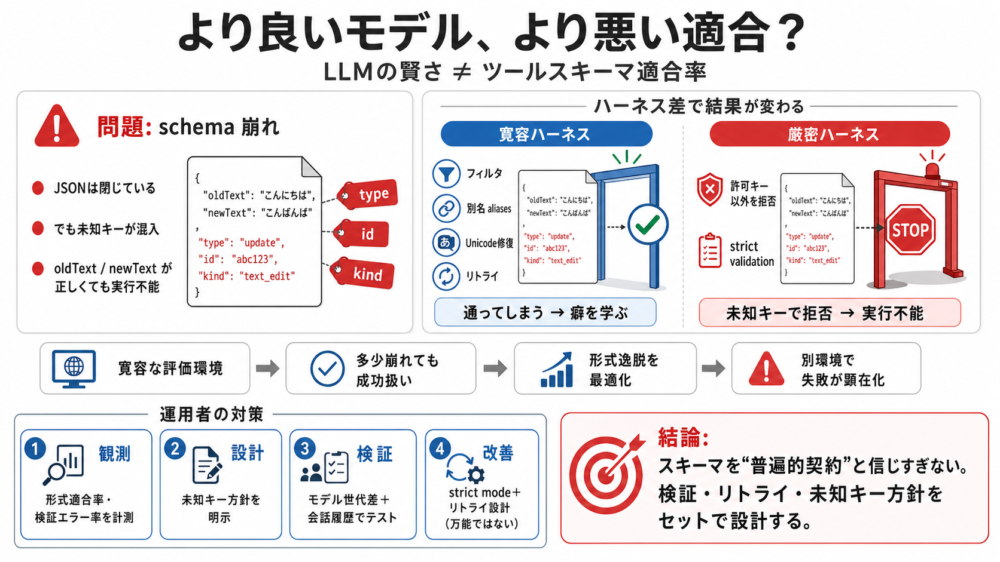

Claude API Structured Output: Complete Guide to Schema ...
# Claude API Structured Output: Complete Guide to Schema-Guaranteed Responses. If you've been working with the Claude AP…

LLMのツール呼び出しは「賢さ」と「スキーマ適合」が必ずしも比例しません。新世代ほど、特定のツール形式で失敗が増えうるという問題提起です。
ツール定義（引数のキー名・型）に合うように、モデルは「疑似命令」を生成します。しかし実運用では、許可されないキーを追加して検証に失敗することがあります。
AnthropicのClaude系（例：Opus 4.8 / Sonnet 5）がPiのファイル編集ツールで、edits[] の各要素に存在しない“架空のキー”を追加し、拒否されるケースが増えたと報告されています。
「スキーマは契約のはず」と思っても、学習と評価が行われた“運用ハーネス（実行側の枠組み）”が寛容だと、モデルは“少し崩れても通る癖”を学びます。
強化学習後のチューニングで、ハーネスが“通過”を与える設計だと、モデルは形式逸脱を最適化してしまう可能性があります。すると別スキーマ環境では一気に失敗が顕在化します。
主因はJSON構文の破壊ではなく、スキーマ上許可されないキーを“閉じられたJSONの中に追加する”ことです。内容（oldText/newText）が正しくても落ちます。
本文の要点を、失敗の性質と原因仮説に沿って整理します。
同じ指示でも再現性が揺れることがあり、失敗が会話履歴や生成モードに依存する可能性が示唆されています。
モデル性能だけでは説明できず、ハーネスの“寛容さ”と検証の厳密さが失敗を左右する、という見立てです。
strict modeは未知キーをサンプリングできない方向に働くため、少なくとも改善し得ます。ただし“必ず解決”とは断定されていません。
ツールスキーマを“普遍的契約”と信じすぎず、サーバ側検証・リトライ設計・未知キーの許容/拒否方針・strict samplingの選択をセットで見直すべき、という結論です。
この要約は、提示された文章（Better Models: Worse Tools の論旨）に基づき、ツール呼び出しの失敗パターンと対策示唆を再構成しています。
# Claude API Structured Output: Complete Guide to Schema-Guaranteed Responses. If you've been working with the Claude AP…
Here's what was happening: When you send a JSON schema to Claude's API for structured output, Anthropic compiles that sc…
## Navigation Menu. # Provide feedback. We read every piece of feedback, and take your input very seriously. # Saved sea…
# Anthropic brings structured outputs to Claude Developer Platform, making API responses more reliable. Anthropic’s Stru…
Structured outputs on the Claude Developer Platform (claude.com) 184 points by adocomplete7 months ago | hide | past | f…